В семидесятых даже в небогатом оснащении Mercedes-Benz W116 стоил как три хэтчбека Volkswagen Golf или четыре Лады‑1500S (в «девичестве» — ВАЗ‑2103).
.PNG) 27888
27888 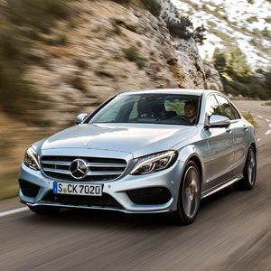
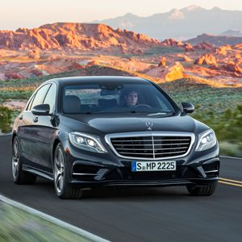
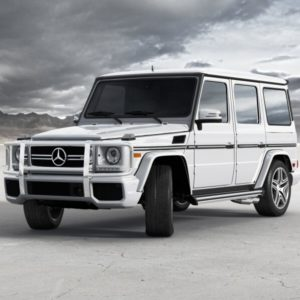
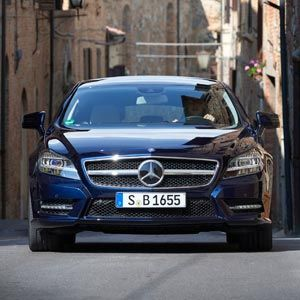
27888
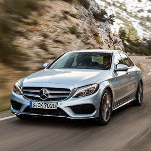
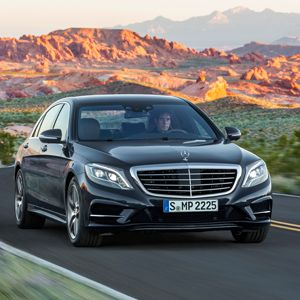
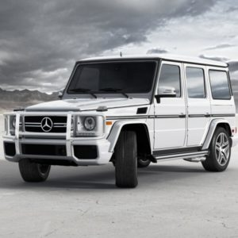
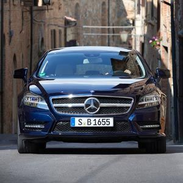
27888
Отказ от физических кнопок в пользу тачскринов поначалу подвергался критике — многие жаловались на то, что в движении пользоваться тачскрином неудобно. На центральной консоли S-класса красуется массивный 12,8-дюймовый сенсорный OLED-монитор, через который осуществляется управление всеми основными функциями машины. Монитор определяет, где находится ваш палец, еще до прикосновения. В момент касания водитель или пассажир получает тактильную обратную связь — так что управлять «полетом» можно на ощупь, не отвлекаясь от дороги.
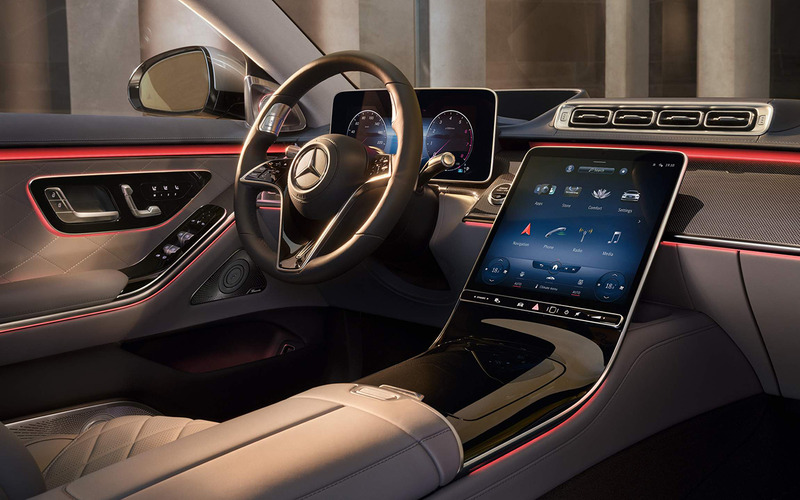2MBUX — интерактивная коммуникационная система Mercedes. Модель второго поколения переваривает данные на 50% быстрее первой генерации и работает на скорости 41 790 Мбит/с. Электроника идентифицирует 27 языков и завязана в общей сложности на пять мониторов S-класса. Монитор водителя с 3D-эффектом и функцией пространственного восприятия отслеживает движения глаз водителя и анализирует его поведение. Система работает с камерами водителя в 3D — приборной панели для изучения характеристик лица, чтобы распознать, когда водитель может заснуть. Огромный проекционный дисплей с дополненной реальностью транслирует на лобовое стекло подсказки навигации. На дисплее возникают стрелки, когда вы подъезжаете к повороту, и предупреждения об ограничениях.
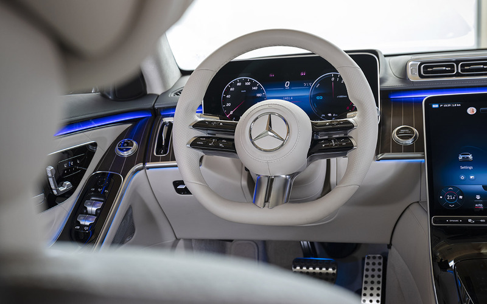Mercedes подсветит каждое из мест в салоне, используя потенциал 250 светодиодов. Если амбиентная
подсветка
создает освещение в соответствии с настроением водителя и пассажиров, то световая интеграция завязана с
системами помощи в правлении. Активное освещение посылает водителю красное визуальное предупреждение,
если
есть риск столкновения с машиной в слепой зоне или когда опасно выходить из автомобиля из-за приближения
машины сзади.
Головное освещение — это светодиодная матричная оптика. Каждая фара содержит 84 диода с 1,3
миллионами
крошечных зеркал, которые проецируют свет в нужную точку. Отдельные сегменты фары подсвечивают
пешеходов,
чтобы убедиться, что вы их заметили, и также дорожные знаки. S-класс использует данные спутниковой
навигации
и направляет световой пучок в сторону поворота. Либо опускает фару, если радары активного круиз-контроля
зафиксировали встречный автомобиль, чтобы не слепить его водителя.
Конечно, абсолютно безопасных автомобилей пока не существует. Но S-класс снижает вероятность проблем к возможному на сегодня минимуму. В модели стоит новые подушки безопасности для задних пассажиров. И это не просто дополнительные шторки безопасности, а настоящие полноразмерные подушки, выстреливающие из передних сидений — впервые в мире на серийной машине.
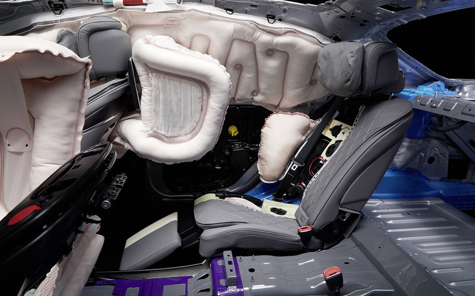Еще одна интересная особенность — импульсная боковая система, работающая в связке с подвеской. Система управления активной подвеской анализирует дорожные условия и вносит коррективы тысячу раз в секунду. Если аварии не избежать, электроника активирует пневмоподвеску и поднимает кузов на 8 сантиметров. Таким образом, энергия столкновения смещается со слабого места — дверей — на мощную силовую структуру пола. Это наиболее защищенное место силового каркаса.